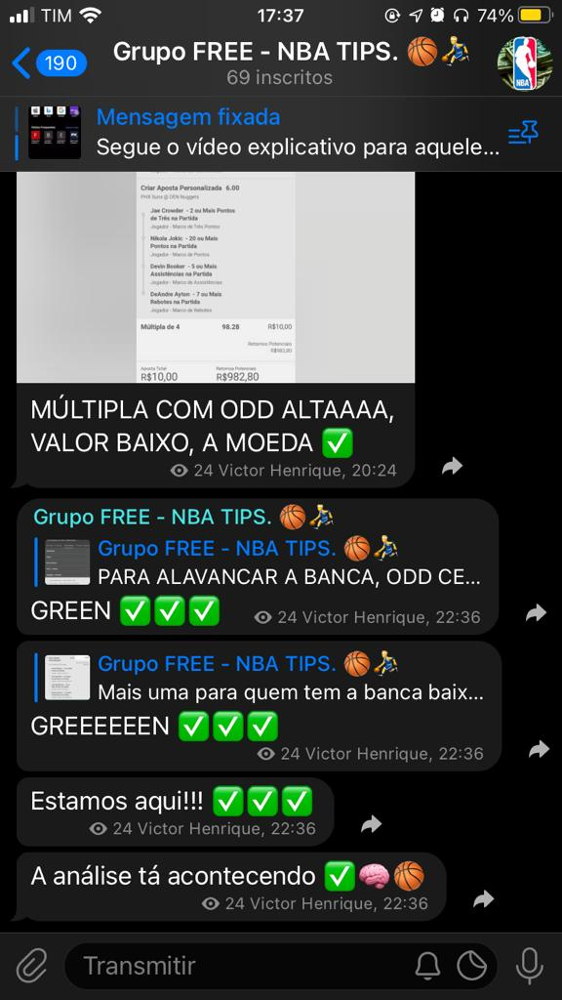
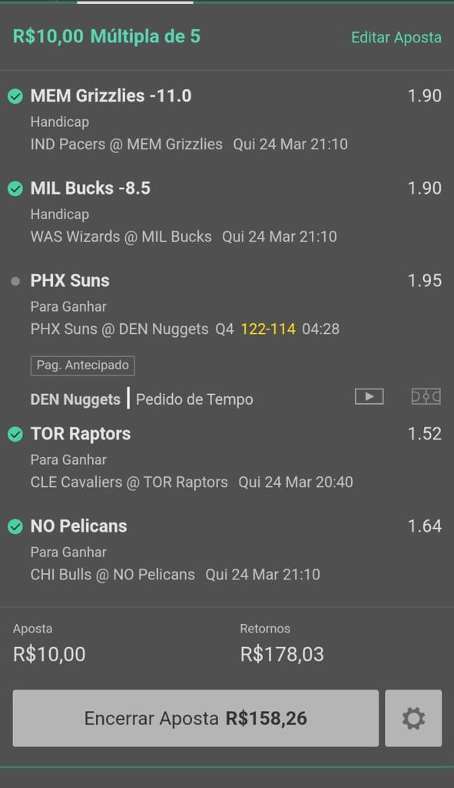
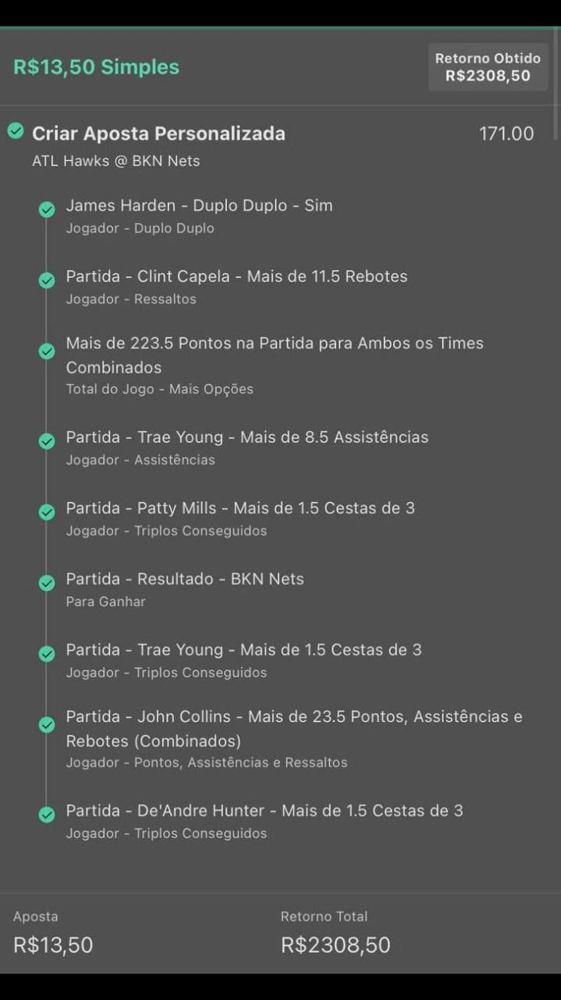

Grupo de apostas esportivas voltado apenas para o mercado da NBA.
Grupo 100% gratuito. Possuímos um amplo mercado dentro da BET365, com várias formas de lucro.
Temos odds baixas, para você que deseja segurança
e investir um valor mais alto. Odds médias, para alavancar sua banca. E
odds altas, também chamadas "odds estouradas".
Odds sempre com alta
porcentagem de assertividade. 🏀
Como disse Mark Twain, escritor e humorista americano:
"Daqui a vinte anos, você estará mais desapontado com as coisas que você não fez do que com aquelas que você fez, então desatraque e navegue para longe do porto seguro, aproveite os ventos da troca em seu caminho. Explore, sonhe, descubra."
Odd 2.10
Odd 17.80
Odd 171.00
Cash out é a opção que a bet365 te oferece para encerrar sua aposta antes de que ela se conclua. O valor que a bet365 oferece é de acordo com a forma que a aposta vai se encaminhando. Por exemplo, se as coisas a qual você apostou que aconteceria estiverem próximas de se realizar, o valor oferecido é mais alto, quanto mais perto de acontecer, mais perto do valor total lhe será oferecido. Assim também funciona do lado negativo. Se a aposta estiver distante do resultado positivo, a bet365 te oferece um valor bem menor do qual você apostou e por muitas vezes nem te sequer te oferece algum valor.
Para dar o cash out, há sempre uma análise a ser feita. É algo particular e de escolha própria de cada um. Entretanto, há grupos (como é o nosso caso) que o líder do grupo indica os momentos de dar o cash out ou de prosseguir até o final. Continua sendo algo particular, mas já diminui a responsabilidade própria, pois nessas situações é costumado a seguir ao trader esportivo que você segue (líder do grupo).
Geralmente a análise feita por nós é de acordo com o que o jogo está proporcionando e também de acordo com o valor que a bet365 estiver oferecendo. Se o jogo estiver movimentado e estivermos precisando de algum scout de um determinado jogador ou mais de um, se estivermos precisando do resultado de alguma equipe e vermos que é iminente a acontecer, deixamos a aposta até o final. Entretanto, se a bet365 estiver oferecendo um valor acima de 75% do resultado, é sempre aconselhável que evitemos sofrimento de esperarmos por detalhes e correr riscos desnecessários.
Por outro lado, se você acreditar que a equipe favorita ao jogo fará um excelente resultado, sendo assim ganhando de uma vantagem muito ampla, você também pode retirar pontos da equipe.
Acreditando que ela vencerá a partida por um placar maior do que os pontos que você retirou.